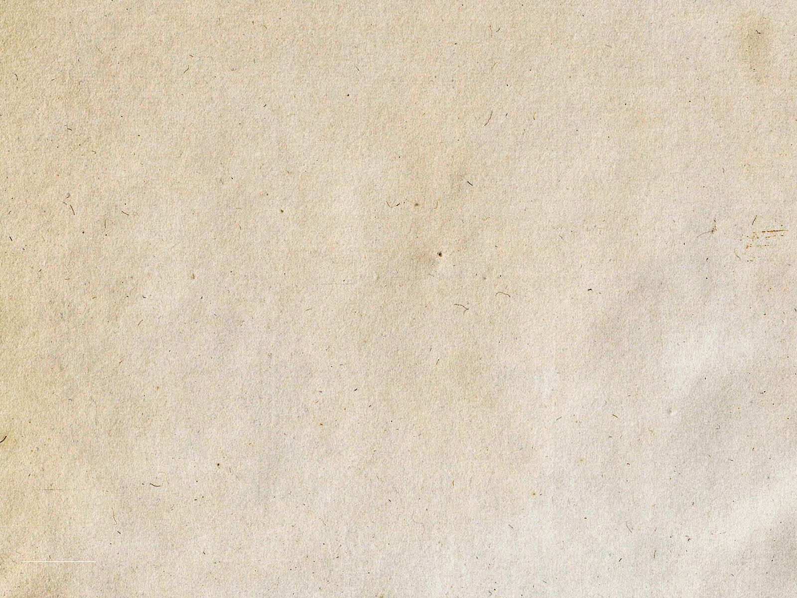

O MOSTRENGO
Mensagem
Fernando Pessoa
O mostrengo que está no fim do mar
Na noite de breu ergueu-se a voar;
À roda da nau voou três vezes,
Voou três vezes a chiar,
E disse:
«Quem é que ousou entrar
Nas minhas cavernas que não desvendo,
Meus tectos negros do fim do mundo?»
E o homem do leme disse, tremendo:
«El-Rei D. João Segundo!»
«De quem são as velas onde me roço?
De quem as quilhas que vejo e ouço?»
Disse o mostrengo, e rodou três vezes,
Três vezes rodou imundo e grosso,
«Quem vem poder o que só eu posso,
Que moro onde nunca ninguém me visse
E escorro os medos do mar sem fundo?»
E o homem do leme tremeu, e disse:
«El-Rei D. João Segundo!»
Três vezes do leme as mãos ergueu,
Três vezes ao leme as reprendeu,
E disse no fim de tremer três vezes:
«Aqui ao leme sou mais do que eu:
Sou um Povo que quer o mar que é teu;
E mais que o mostrengo, que me a alma teme
E roda nas trevas do fim do mundo;
Manda a vontade, que me ata ao leme,
De El-Rei D. João Segundo!»